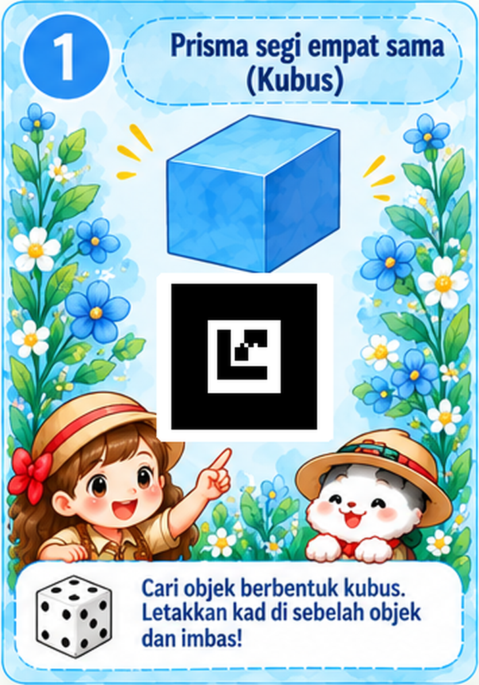
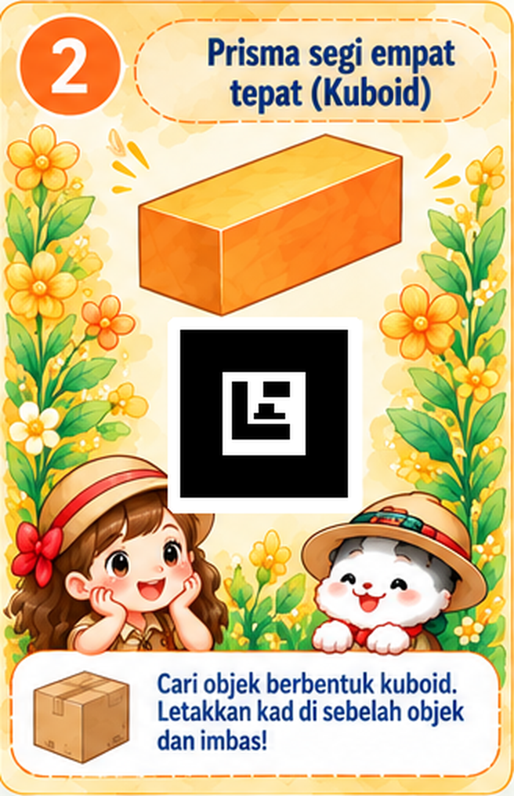
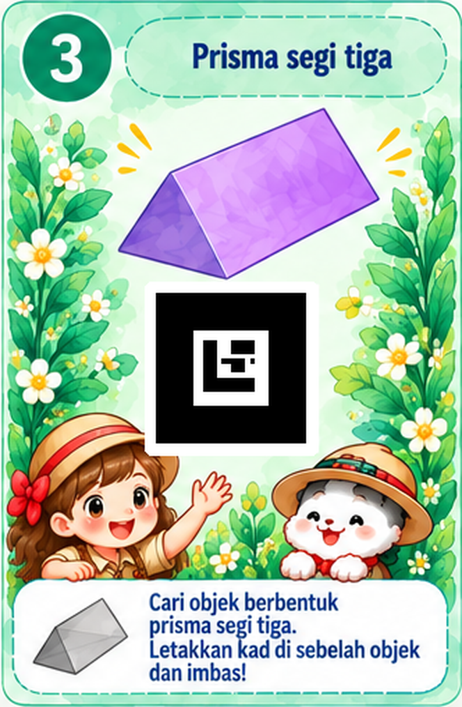
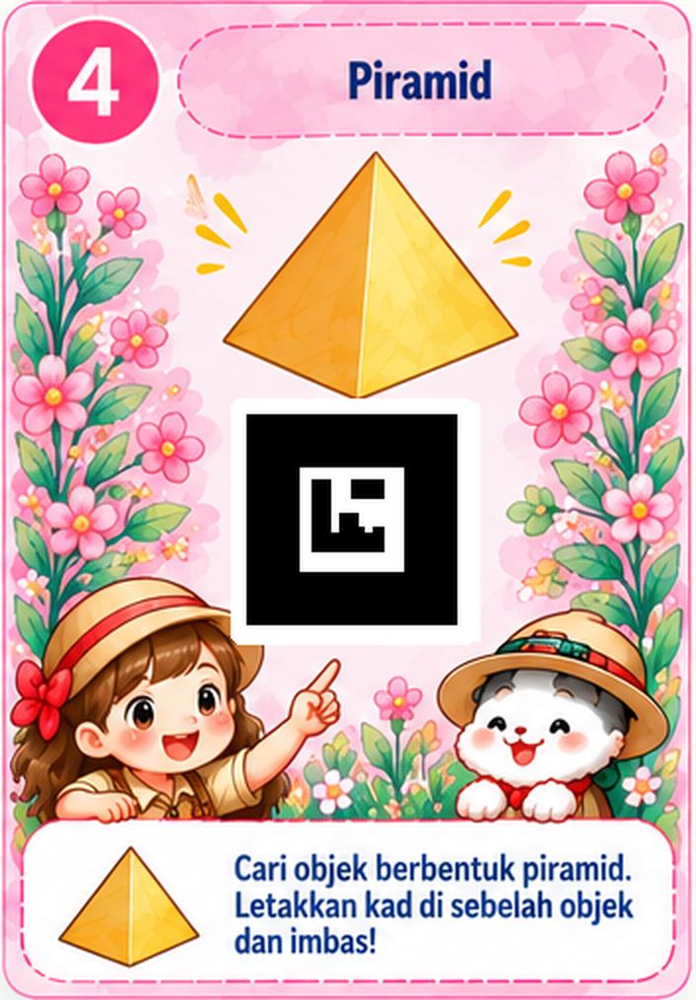
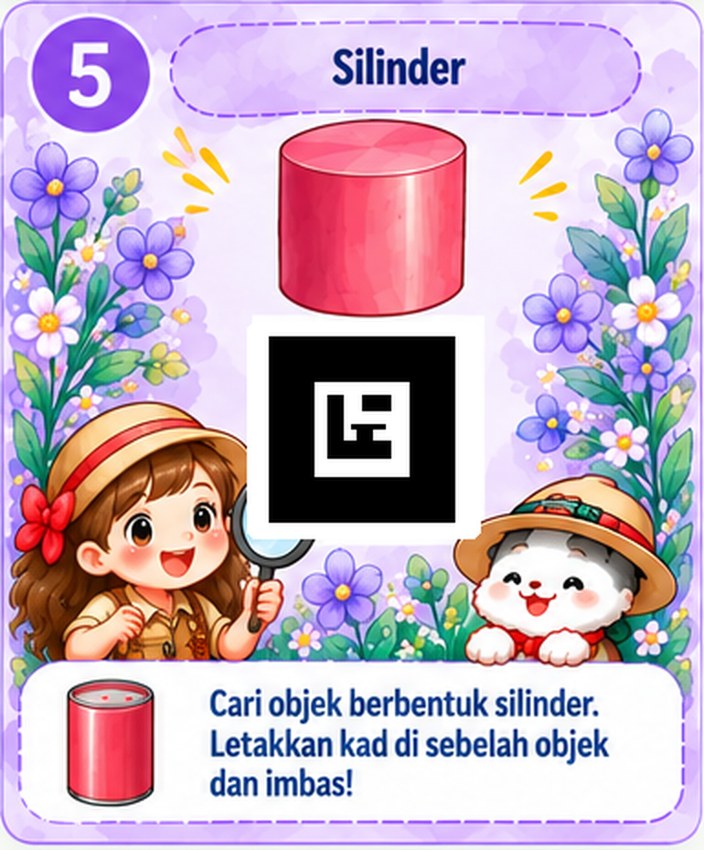
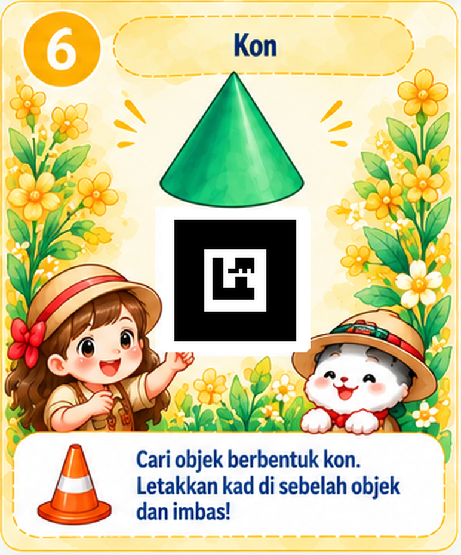
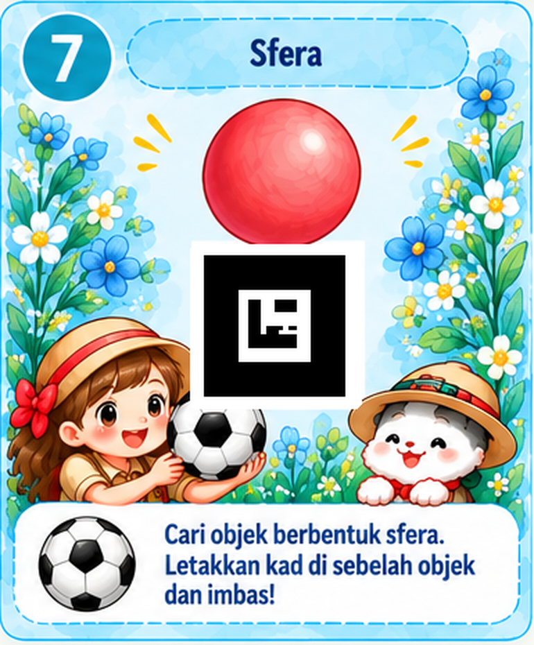

🌿 7 Kad Penanda AR-Geo

Jom cari bentuk geometri dalam kehidupan harian!
📷 Jelajah AR Dunia Sebenar
Pilih kad penanda, cari objek sebenar yang sepadan, kemudian imbas penanda menggunakan kamera telefon atau tablet. Kamera mengenali kad, bukan objek secara automatik.






🌱 Cara Menggunakan Kad
1. Cetak kad
Pilih kad dan cetak pada kertas A5.
2. Cari objek
Letakkan kad di sebelah objek yang sepadan.
3. Buka kamera
Tekan Imbas dan benarkan akses kamera.
4. Lihat AR
Model 3D dan ciri bentuk dipaparkan apabila penanda dikesan.
Untuk mengimbas, terbitkan web app melalui HTTPS (contohnya GitHub Pages) dan benarkan akses kamera. Paparan setempat file:// boleh digunakan untuk melihat dan mencetak kad, tetapi bukan untuk menguji kamera.
🧪 Ujian kamera guru — penanda Hiro
Hiro dikekalkan sebagai penanda teknikal sahaja, bukan aktiviti utama murid.
Lihat penanda Hiro